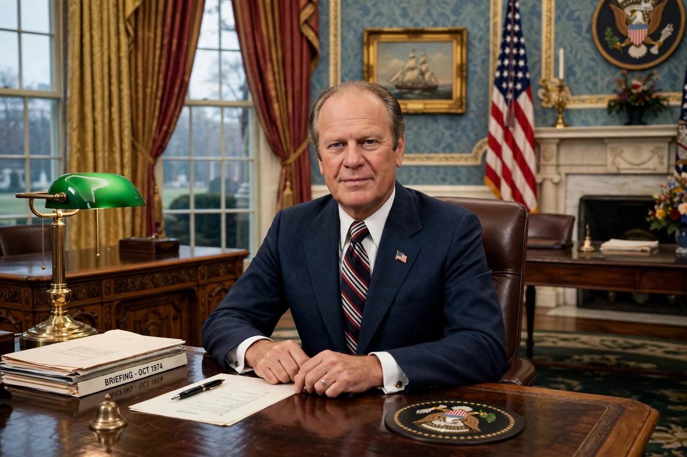

From Wikipedia, the free encyclopedia
| Gerald Ford | |
|---|---|
 | |
| Born | Leslie Lynch King Jr., 14 July 1913, Omaha, Nebraska |
| Died | 26 December 2006 (aged 93), Rancho Mirage, California |
| Presidency | 9 August 1974 – 20 January 1977 (38th President) |
| Vice President | Nelson Rockefeller |
| Earlier office | 40th Vice President (1973–74); US Representative from Michigan (1949–73) |
Gerald Rudolph Ford Jr. (born Leslie Lynch King Jr.; July 14, 1913 – December 26, 2006) was an American politician who served as the 38th president of the United States from 1974 to 1977. He previously served as the leader of the Republican Party in the House of Representatives, and as the 40th vice president from 1973 to 1974. When President Richard Nixon resigned in August 1974 in the wake of the Watergate scandal, Ford succeeded to the presidency — the only person to become president without being elected to either the presidency or the vice presidency, having been appointed vice president under the Twenty-fifth Amendment after Spiro Agnew resigned.
Ford's first month was overshadowed by his controversial pardon of Nixon on 8 September 1974 for any crimes committed as president, a decision that damaged his standing but which he defended as necessary to end the national trauma; later assessments, and the John F. Kennedy Profile in Courage Award, treated it more kindly. His administration faced high inflation and recession (the "Whip Inflation Now" campaign), the fall of Saigon in April 1975, the Mayaguez incident, and the Helsinki Accords with the Soviet Union. He survived two assassination attempts in September 1975, by Lynette "Squeaky" Fromme and Sara Jane Moore.
After fending off a challenge from Ronald Reagan for the Republican nomination, Ford lost the 1976 election narrowly to Jimmy Carter. In retirement he remained an elder statesman, and at his death in 2006, aged 93, he was the longest-lived US president to that date.
See also: Saturday Night Massacre · Watergate scandal · Richard Nixon